arXiv 2609.07002 · cs.RO · v1 2026 年 9 月 7 日 · CoRL 2026（代码 README 称 Spotlight）· 中文精读
WM-Craftnet: World Synesthesia Model for Generalizable and Robust Dexterous In-Hand Manipulation
作者 Jie Yin†、Zeyuan Zhao†‡、Xiaojing Tan、Yang Liu‡、Chiyu Wang、Xinyang Gu*（† 共同一作，‡ 在 Sharpa 实习期间完成，* 通讯作者），来自 Sharpa Robotics。
关于这份精读。这篇论文在 arXiv 摘要页登记的许可是 CC BY 4.0（2026-11-23 用脚本查摘要页），只有 v1（2026-09-07）。但 PDF 第 1 页页脚印着“© 2026 Sharpa. All rights reserved.”，和 CC BY 4.0 矛盾；其他 14 页没有这句。这和本站 SONIC、GraspGen 两页遇到的情况一样。按用户这次的要求，我仍按 arXiv 登记的 CC BY 4.0 放裁切图，并在这里写明矛盾（读者注 1）。如果作者方面提出异议，应撤图改成文字描述。
图的处理。图 1 到图 9、表 1、表 2、表 4、表 5、表 6 旁边的物体图和小曲线，共 12 张，从 arXiv PDF 裁切（pdftoppm 渲染；原文里的图是高分辨率位图，小图按需要提高渲染分辨率，让宽度在约 1400 px 内），只做了裁切、缩放和格式转换（webp），没有改内容。图 3、4、5 在原文里并排，我裁成一张。版权归作者，署名 Yin 等（Sharpa）。图下的文字是我写的。表格是照录原文数字。原文的曲线都是位图，没法做矢量读数，文中凡是从曲线上读的数都标了“目测”。“读者注”是整理时核算或对照发现的，不属于论文内容，页尾有汇总。
代码。官方代码 sharpa-robotics/WM-Craftnet，我读的是最新提交 a1e825a（2026-10-29；首个提交 b29fae1 是 2026-09-11），只读，没有运行。许可是 Apache-2.0，“Copyright 2026 Sharpa Group”，带 NOTICE 和 THIRD_PARTY_NOTICES.md。按这两个文件：isaacgymenvs/ 来自 NVIDIA IsaacGymEnvs（BSD-3，任务文件和 dr_utils.py 保留 NVIDIA 文件头）；wsm/ 改自 NM512 的 dreamerv3-torch（MIT，文件头保留 MIT 全文）；rl_games/ 来自 rl_games（MIT）；“世界模型当条件”的接法参照字节的 WMP（Apache-2.0）；任务结构参照 Robot Synesthesia 的 in-hand-rotation（MIT）。deploy/sharpa_sdk/ 下的二进制是厂商 SDK，另有条款。两份声明里没有提到 HORA（读者注 2）。本页对代码只引文件名、行号和配置键，不抄代码。路径相对仓库根目录。
arXiv 摘要页（2026-11-23 用脚本取）给出的许可链接是 creativecommons.org/licenses/by/4.0/。PDF 第 1 页左下脚注区有“10th Conference on Robot Learning (CoRL 2026), Austin TX, USA.”和“© 2026 Sharpa. All rights reserved.”两行（pdftotext 逐页检索，只有第 1 页有）。两者矛盾：CC BY 允许再分发和改编，“All rights reserved”不允许。本页按 arXiv 登记的许可和用户的要求放了裁切图，并保留署名和原图链接。Sharpa 官网同名研究文章页脚也是“© Sharpa Pte Ltd. All rights reserved.”，本页只链接它，没有用其中的图或视频。
整理说明里提到“基于 HORA / IsaacGymEnvs / rl_games”。我在 NOTICE、THIRD_PARTY_NOTICES.md、README 和全部源码里检索“hora”“rapid motor”：没有任何出现。两份声明列的是 IsaacGymEnvs（BSD-3）、WMP（Apache-2.0）、Robot Synesthesia in-hand-rotation（MIT）、DreamerV3 / dreamerv3-torch（MIT）、rl_games（MIT）、Detectron2 的 flatten.py（Apache-2.0）。我的推断：in-hand-rotation 本身是在 HORA 代码上发展来的，所以 HORA 可能是“间接上游”，但本仓库没有声明，未核实。另外 NOTICE:62 写“See assets/licenses for license information for assets”，而仓库里没有 assets/licenses 目录（assets/ 下只有 urdf/）。THIRD_PARTY_NOTICES.md 自己也提醒：物体网格和机器人资源的来源和再分发条款需要另行核实。
手内操作要从不完整、带噪声的观测里推断物体的位姿、形状、接触和打滑。已有的触觉和视触觉强化学习方法在受控环境里能把物体转得很好，但遇到初始位姿偏移、外力扰动、换物体就不稳。WM-Craftnet 学一个动作条件的紧凑隐动力学模型，输入是本体感觉、腕部深度、触觉和动作，用多模态重建和奖励预测来监督。作者把它叫 World Synesthesia Model（WSM，“世界联觉模型”）。
关键的选择是：不拿世界模型做想象（imagination），也不拿它优化策略，只把它的循环状态当作非对称演员-评论家（PPO）策略的额外输入。WSM 的输入是加噪的深度，重建目标是干净深度，所以它在真机上相当于一个去噪的几何状态估计器。
读完我认为最值得记住的几点：
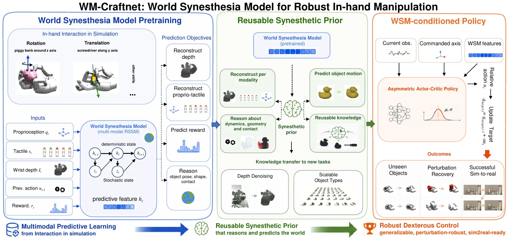
图 1 左下的“Inputs”框里有“Reward. \(r_t\)”，箭头指向 WSM。但 §3.2 说奖励只在回放里当训练目标，部署不需要；附录 A.1 也说“reward is stored only as a prediction target”。代码一致：编码器排除了 reward 键（wsm/networks.py:337），RSSM 的 obs_step 也不接收奖励。图 1 的画法容易误读，以正文为准。
Sharpa 在 2026-01-07 的公告里介绍过 CraftNet：一个分层的 VTLA（视觉-触觉-语言-动作）模型。System 2 是约 1 Hz 的视觉语言模型，负责理解指令和规划；System 1 是约 10 Hz 的运动基础模型，负责接触前的粗动作；System 0 是约 100 Hz 的“交互脑”，用实时触觉在接触中持续调整手指。公告说“CraftNet 是 System 0 和 System 1 的组合”。CraftNet 本身没有论文；WM-Craftnet 是唯一一篇名字里带 CraftNet 的正式论文。这部分细节见 CraftNet 页，这里不展开。
按论文核实的结果：论文没说。我在 PDF 全文里检索了 System 0 / 1 / 2、VTLA、hierarchical、100 Hz：都没有出现。“CraftNet”只作为 WM-Craftnet 这个名字的一部分出现；引言、方法、结论都没有说 WM-Craftnet 属于哪一层，也没有提到上层的语言或视觉语言模型。Sharpa 官网的 WM-Craftnet 研究文章（只读、未抓取图片）和代码 README 也没有提 System 0。
论文能确定的几个事实：
我的推断（未核实）：WM-Craftnet 更像是 CraftNet 产品线上一项“灵巧手内操作”的研究成果，名字借了 CraftNet 的品牌；它的定位比较接近 System 0 想解决的“最后一毫米”接触调整，但实现的频率和接口都对不上公告里描述的 System 0。不能把它当作 System 0 的论文。
世界模型的三种用法。SuperMimic 问 4、问 5 比过几种“世界模型”的差别。按“训练时世界模型怎样帮策略”分，本站读过的几篇正好覆盖三种用法，WM-Craftnet 是第三种：
| 想象（imagination） | 可微模拟器（BPTT） | 作条件（conditioning） | |
|---|---|---|---|
| 代表 | DreamerV3、DayDreamer；RWM 也在模型里滚轨迹 | SuperMimic | WM-Craftnet；WMP（Lai 等 2024，本站没有精读） |
| 策略在哪里学 | 在模型滚出的想象轨迹里学：Dreamer 训演员和评论家，RWM 跑 PPO | 在模型里滚 32 步，梯度穿过模型回到策略 | 在真仿真器里用 PPO 学；模型只提供一个特征 |
| 梯度是否穿过模型 | Dreamer：演员梯度用 REINFORCE（离散）或穿过模型（连续）；RWM：不穿过 | 穿过 | 不穿过，接口处停梯度 |
| 部署时用不用模型 | 一般只用演员（Dreamer 的演员要用编码器 + RSSM 算状态） | 不用 | 要用：每一步都要跑编码器和 RSSM 的观测更新，算出 \(h_t\) |
| 模型输入 | DreamerV3：图像或向量；RWM：低维本体 | 机器人物理状态 | 本体 + 二值触觉 + 96 × 72 腕部深度 + 上一步动作 |
| 模型的作用 | 替代环境 | 替代环境，还要可微 | 带记忆、去噪的状态估计器 |
对照起来看：DreamerV3 的 RSSM 和 WSM 结构几乎一样（代码就是 dreamerv3-torch 的移植，连 512 / 32 × 32 / 自由比特 1.0 / dyn 0.5 / rep 0.1 都一样）。区别只在 RSSM 训好以后拿来干什么。DreamerV3 让演员在模型里“做梦”；WM-Craftnet 只取 \(h_t\)，把“世界模型”降成一个有预测目标的循环编码器。表 9 正好检验了这一点：同样的历史输入，不带预测损失的 LSTM / GRU 比 WSM 低（附录 B.1）。
和 RWM。WM-Craftnet 的相关工作把 RWM 归为“把学到的动力学当神经模拟器做策略优化”，以此和自己区分。两篇都在 PPO 框架里用了 GRU 类循环模型，但 RWM 是在模型里滚轨迹训 PPO，WM-Craftnet 的 PPO 数据全部来自 Isaac Gym。
和 LingBot-Touch。LingBot-Touch 的数据有三分之一来自遥操作的 Sharpa Wave 手，触觉是视触觉阵列。WM-Craftnet 用的是同一只手，但触觉被压成每个指尖一位的“有没有接触”：仿真里是接触力 ≥ 阈值（TacThresh: 0.3，随机 ±0.05），真机上是 SDK 给的力乘 1/1.5 后 ≥ 0.05（wm_craftnet_infer.py:805-858）。两篇对触觉的使用粒度差别很大。
同批的 Sharpa 相关页。CraftNet（三层系统和 DQ 部署）、FTP-1（触觉策略，作者含 Sharpa）。这两页由别的整理者并行写，结论以那两页为准。
为什么难。和机械臂加夹爪的稳定接触不同，手内操作要靠断续的指尖接触去控制一个只能部分看到的物体，还要适应位姿、形状和外力的变化。
现有方法的问题。基于本体、触觉和视觉的学习方法进展很大，但在窄物体集或固定初始位姿上训的策略，容易记住针对某个物体的固定指法（finger gait），遇到位姿偏移、外力和物体漂移就脆。有的方法加物体 ID 或形状编码，又把部署绑在已知标注上。
本文的想法。位姿鲁棒的调整需要在部分可观下推断几何、位姿、接触状态和打滑风险。深度和触觉互补，但简单把传感器拼起来，策略就得自己从带噪的融合观测里学接触的时序动力学；真机腕部深度又常常损坏或偏离仿真。作者受人类“联觉式”物理推理启发：视觉给全局几何，触觉给局部接触，动作历史告诉你接触在控制下怎样演化。WM-Craftnet 用这个想法预判接触切换、物体漂移和打滑，在扰动下做调整，而不是重复固定指法。
做法概述。从本体、带噪深度、触觉和最近的动作学一个 Dreamer 式循环状态，奖励只作为训练时的预测目标。策略以这个循环特征为条件。WSM 训练时输入加噪深度、用干净深度当重建目标。
贡献。（1）提出基于 WSM 的框架；（2）用循环历史基线、辅助头和模态头消融、隐状态诊断、干净深度重建、预训练来分析 WSM，说明它能当 49 物体下游控制的可复用先验；（3）仿真和真机的定量评测，22 自由度五指手上实现 sim-to-real。
基于学习的手内操作。RMA 从本体历史在线推断物体属性做 z 轴旋转；DeXtreme 把域随机化的重定向策略和视觉位姿估计器结合；Touch Dexterity 用分布式二值接触做“看不见也能转”；AnyRotate 用稠密触觉做与重力无关的多轴旋转。更复杂的重定向可以组合预训练的单轴技能，或在形状专家之间路由（DexReMoE）。还有用真机转笔轨迹适配、从硬件数据学逐关节执行器修正（DexNDM）、随机化 3D 高斯做单目位姿估计（ViserDex）的。相邻的抓取工作有目标辅助的演员-评论家、DextrAH-G。这些多是抓取获取；本文学的是持续手内控制的循环交互状态。
视触觉灵巧操作。RotateIt 把特权的形状和物理属性蒸馏进一个视觉、触觉、本体、动作历史驱动的时序 Transformer。Robot Synesthesia（本文表里的 In-Hand Rotation 基线 [6]）把相机、手和触觉点投到同一个三维点云，再做教师-学生蒸馏。NeuralFeels 用在线神经场融合视触觉估物体状态；带法向和剪切的触觉皮肤做手内平移；ViTacFormer 学跨模态特征。本文的不同：学动作条件的循环动力学、用多模态预测目标，把确定性状态停梯度后给 PPO，而不是回归一个固定的特权编码，也不把感知和控制分开。
机器人控制的世界模型。World Models 提出紧凑的学到的动力学；Dreamer 在循环状态空间模型的想象轨迹里优化行为；DayDreamer 直接上物理机器人；MoDem-V2 用视觉世界模型做真机接触操作。RWM 把学到的动力学当神经模拟器做策略优化。在“表征当条件”这一支，WMP 给腿足策略一个停梯度的循环状态，不做想象里的 PPO；DreamMimic 用世界模型的预测特征做视觉全身策略蒸馏。WM-Craftnet 把这一支扩展到视触觉手内操作，加了“带噪到干净”的深度重建和跨物体分布复用预测模型。
注：DreamMimic（[25]，arXiv 2608.22278）的作者是本文一作 Jie Yin 和 X. Lai；WMP 的一作是 H. Lai。代码 README 的致谢里明确写了“建立在 WMP 之上”。
任务对象是 22 自由度五指手上部分可观的手内操作。论文把 WSM 定义为：用多模态重建和奖励预测训练的 Dreamer 式循环隐动力学模型，它停梯度的确定性状态作为可部署的策略上下文。“联觉”一词指它的跨模态预测作用：视觉几何、触觉接触、本体和动作历史一起约束隐交互状态。这个预测状态让策略不需要物体 ID，并为演员充当循环状态估计。
任务是把抓着的物体绕指令轴 \(\mathbf a\in\{\pm x,\pm y,\pm z\}\) 连续旋转。时刻 \(t\) 的可部署观测是
\[\mathbf o_t=\big(\mathbf p_t^{\rm stack},\ \mathbf c_t^{\rm stack},\ \mathbf D_t,\ \mathbf u_{t-1}\big)\tag{1}\]\(\mathbf p^{\rm stack}_t\)、\(\mathbf c^{\rm stack}_t\) 是几帧堆叠的归一化本体和二值触觉 / 接触；\(\mathbf D_t\) 是当前的带噪腕部深度流；\(\mathbf u_{t-1}\) 是上一步的关节目标指令。\(\mathbf o_t\) 只含机器人上的传感器和控制历史，不含仿真里的干净深度，也不含 WSM 解码器重建出的深度。演员以 \(\mathbf o_t\)、指令轴 \(\mathbf a\) 和投影后的 WSM 特征 \(\psi(\mathbf w_t)\) 为条件，输出 22 个关节的相对目标指令 \(\mathbf u_t\)，经平滑后交给底层控制器。
目标是在稳定抓握的前提下绕目标轴有符号地转动。设物体姿态 \(\mathbf R^o_t\in SO(3)\)，一步进度为
\[\Delta\theta_t=\operatorname{proj}_{\mathbf a}\!\Big(\log\big(\mathbf R^o_{t+1}(\mathbf R^o_t)^{-1}\big)\Big)\tag{2}\]\(\log\) 把旋转变成轴角，\(\operatorname{proj}_{\mathbf a}\) 投到指令轴上。仿真训练时，物体位姿、速度和接触力用于算奖励、训评论家和诊断。表 8 列出了完整的观测 / 动作接口。
代码：式 2 在 isaacgymenvs/utils/spin_reward_utils.py:63-78，相对旋转取 \(R_{\rm cur}R_{\rm prev}^\top\)，转轴角后点乘指令轴，再乘 20（SPIN_DELTA_SCALE = 20.0，:7）。偏轴分量取轴角向量减去轴向分量后的模，同样乘 20。观测里的堆叠帧数是 obs_stack: 4。
单帧向量 n_obs_dim = 22（关节位置，归一化到 [−1, 1]，加 ±0.06 均匀噪声）+ 22（上一步关节目标）+ 5（五个指尖的二值接触）+ 24（指令轴的三维向量重复 8 次）= 73 维（wm_craftnet_rotation.py:423-425, 1632-1683）。演员看 4 帧堆叠 = 292 维，再拼上 WSM 投影特征（配置里 32 维，见读者注 10），共 324 维，经 MLP [512, 256, 256]（ELU）输出 22 维动作均值。深度图不直接进演员：network_builder.py:197-213 只把 obs 和 wm_feature 拼起来，深度只通过 WSM 影响策略。这和式 1 把 \(\mathbf D_t\) 写进 \(\mathbf o_t\) 的说法不同：按代码，演员的“深度”信息全部来自 \(h_t\)。评论家（central_value）看 212 维特权状态：关节位置、速度、力矩、物体位姿和线角速度、动作、指令轴、各刚体接触力、上一步目标（:1601-1630），网络 [512, 512, 256, 256]（WMCraftnetPPO.yaml:104-110），不看 WSM 特征（network_builder.py:198-199 的注释）。
世界模型每步接收：单步本体向量 \(\mathbf p_t\)、触觉 / 接触向量 \(\mathbf c_t\)、带噪的归一化深度图 \(\mathbf I_t\)、上一步动作 \(\mathbf u_{t-1}\)、回合开始标志 \(m_t\)。回放记录里另存干净深度和奖励，只当训练目标，部署时不需要。演员看堆叠的本体和触觉，世界模型用不堆叠的低维向量，保持动力学紧凑。给定回放数据
\[\mathcal D=\{(\mathbf p_t,\mathbf c_t,\mathbf I_t,\mathbf I_t^{\rm clean},\mathbf u_{t-1},r_t,m_t)\}_{t=1}^{T}\tag{3}\]本体和触觉各用 MLP 分支编码，深度用 CNN 分支，再由 Dreamer 式多模态编码器融合：
\[\mathbf e_t=f_{\rm enc}(\mathbf p_t,\mathbf c_t,\mathbf I_t)\tag{4}\]深度在手-物工作区附近截断和裁剪。WSM 的输入深度加时间相关的丢点、高斯噪声和小角度随机旋转；重建目标是只裁剪、不加噪的干净深度。部署时演员用带噪传感器流和循环 WSM 特征。WSM 学会从损坏的观测重建干净的手-物几何，它的循环动力学则从每步紧凑的编码提供时间记忆。
WSM 的观测只有两个键：prop 和 image（isaacgymenvs/utils/world_model.py:135, 197-201）。prop 就是读者注 4 里的 73 维单帧向量（wm_craftnet_camera_rotation.py:358-362, 2109），里面同时含本体、5 位触觉和 24 维指令轴。编码器 wsm/networks.py:319-377 把所有一维键拼起来过一个 MLP（5 层 × 1024，wsm/configs.yaml:31），深度过一个 CNN。所以：
这几条不影响方法的大意，但复现时要知道 WSM 的输入并不只有“传感器”。
代码的深度流水线在 wm_craftnet_camera_rotation.py:2075-2093：归一化 → 裁剪（干净目标取在这一步）→ 加噪 → 取反（近处为 1）。配置 WMCraftnetRotation.yaml:143-170：
随机旋转 ±0.3°、最大深度 0.4 m、96 × 72 三项一致。另外相机外参每次还有 ±5 mm、±0.3° 的抖动（position_jitter、rotation_jitter_deg，:177-178），论文没写。
世界模型是 Dreamer 式循环状态空间模型（RSSM）。它的优化和 PPO 的梯度路径分开，演员拿到的是停梯度的确定性隐特征。设 \(\mathbf z_t\) 为随机隐状态、\(\mathbf h_t\) 为确定性循环状态，后验更新是
\[\mathbf z_t,\mathbf h_t=f_{\rm wm}\big(\mathbf z_{t-1},\mathbf h_{t-1},\mathbf u_{t-1},\mathbf e_t,m_t\big)\tag{5}\]演员侧的特征取确定性部分
\[\mathbf w_t=\mathbf h_t\tag{6}\]它在进入策略网络之前被停梯度。“当前实现里，512 维的 \(\mathbf h_t\) 经一个小 MLP 投影到 16 维，再和策略观测拼接。”
世界模型用 PPO 采样时填的回放缓存训练。每行存 \((\mathbf p_t,\mathbf c_t,\mathbf I_t,\mathbf I^{\rm clean}_t,\mathbf u_{t-1},r_t,m_t)\)，\(\mathbf I_t\) 是加噪 / 增强后的输入，\(\mathbf I^{\rm clean}_t\) 是解码器的干净目标。训练采连续的片段，优化 Dreamer 式目标
\[\mathcal L_{\rm wm}=\mathcal L_{\rm img}+\mathcal L_{\rm prop}+\lambda_c\mathcal L_{\rm tac}+\lambda_r\mathcal L_{\rm reward}+\lambda_{\rm dyn}\mathcal L_{\rm dyn\text{-}KL}+\lambda_{\rm rep}\mathcal L_{\rm rep\text{-}KL}+\mathcal L_{\rm aux}\tag{7}\]\(\mathcal L_{\rm img}\) 从带噪输入推出的隐状态重建干净深度；\(\mathcal L_{\rm prop}\) 重建本体；\(\mathcal L_{\rm reward}\) 预测采样时的奖励；两个 KL 项约束后验 / 先验动力学。受旋转和抓取工作的启发，完整 WSM 用深度、本体、触觉接触、奖励、物体位姿、价值、物体形状几个辅助头来学任务相关的预测状态。仿真训练时，位姿和形状头用仿真器标签，形状用“基点集（BPS）到网格的位移向量”表示。附录 B.1 分析各头的贡献。
奖励头的定义在 wsm/models.py:87-98，损失缩放在 :169-173：self._scales = dict(reward=config.reward_head["loss_scale"], image=1.0)；wsm/configs.yaml:38-39 写的是 reward_head: {layers: 2, dist: 'symlog_disc', loss_scale: 0.0, outscale: 0.0}。训练时每个头的负对数似然乘这个缩放后相加（models.py:240-244），所以奖励项是 \(0\times\mathcal L_{\rm reward}\)，对编码器和 RSSM 没有梯度；outscale: 0.0 还把输出层初始化为零。任务配置能覆盖的键在 world_model.py:63-83 有白名单，不含 reward_head，所以从 Hydra 也改不了。
论文摘要、引言、§3.3、图 1、README 都把“奖励预测”列为监督信号之一；式 7 写了 \(\lambda_r\) 但没给值，表 7 也没有。按发布代码，\(\lambda_r=0\)。这一项是否在论文实验里开着，我无法从仓库判断（未核实）；如果论文实验也是 0，那么“奖励监督预测模型”这句话不成立，WSM 的任务信息只来自价值头（读者注 9）。
RSSM 的想象函数 imagine_with_action（wsm/networks.py:172）在整个仓库里只被 wsm/models.py:384 的 video_pred 调用，而 video_pred 没有调用方（grep 全仓库）。WSM 的训练 WorldModel._train（models.py:196-347）只做后验 observe、KL 和各头损失；DreamerV3 原配置里的演员、评论家、继续头（configs.yaml:34-41）在 WorldModel 里没有构建。所以“不用世界模型做想象或策略优化”这句话，代码和论文一致。
| 头 | 目标 | 损失 | 系数（任务配置） | 出处 |
|---|---|---|---|---|
| 深度 image | 干净深度 image_clean | MSE 负对数似然 | 1.0 | models.py:236-237 |
| 本体 prop | 73 维单帧向量（含触觉和指令轴） | symlog MSE | 1.0 | configs.yaml:33 |
| 奖励 reward | 采样时的奖励 | symlog 离散分布 | 0.0 | 读者注 7 |
| 触觉 tac | 17 个连杆的接触（仿真接触力 ≥ 0.01 N），不是输入的 5 位 | 带正样本加权的 BCE | 1.0 | yaml:214-244、models.py:264-296 |
| 位姿 pose | 物体位置 3 + 旋转 6D（仿真标签） | MSE + 测地角 | 位置 0.05、旋转 0.5 | yaml:207-212 |
| 价值 value | PPO 评论家的价值估计 | 平滑 L1 | 100.0 | wm_continuous.py:68-75 |
| 形状 obj | 64 个基点到网格的位移 × 100（cm），192 维 | 平滑 L1 | 100.0 | yaml:249-258 |
KL：自由比特 1.0、dyn 0.5、rep 0.1，和表 7 一致。注意价值头的目标来自看特权状态的评论家，形状、位姿、17 连杆接触都是仿真标签：“特权信息”通过这些辅助头进入了 WSM 的表征，但部署时 WSM 只吃可部署的输入。配置注释里 BPS 基点“在 8 cm 球内采样”，而键值 wm_obj_bps_radius_m: 0.06 是 6 cm（yaml:253-257），注释和值对不上。
正文 §3.3 和表 7 都写投影是 512 → 64 → 32 → 16。代码里网络默认值正好是这个（rl_games/algos_torch/network_builder.py:578-579：wm_latent_dim 默认 16、wm_feature_hidden 默认 [64, 32]），但任务配置覆盖成 wm_latent_dim: 32、wm_feature_hidden: [256, 128]（WMCraftnetRotation.yaml:185-186，经 isaacgymenvs/train.py:143-145 传给网络），发布检查点的配置也是 32 和 [256, 128]（example_ckpt/wm_craftnet_set_z.yaml:279-282）。所以实际跑的是 512 → 256 → 128 → 32（中间 ELU，最后一层线性，network_builder.py:203-213）。参数量：论文版 512·64 + 64·32 + 32·16 加偏置 ≈ 3.5 万；配置版 512·256 + 256·128 + 128·32 加偏置 ≈ 16.8 万。论文实验用的是哪一种，未核实。
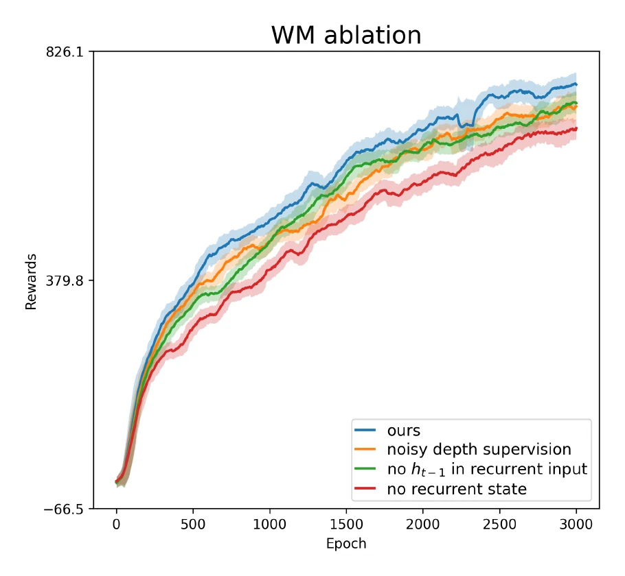
自己画的 · 11 幕 3D 框架动画
总览、手内旋转任务和重置条件、三路输入（73 维单帧向量、96 × 72 深度、4 帧堆叠）、深度加噪和干净目标、RSSM 一步、七个预测头（论文 / 代码 / 发布检查点三种开关）、\(h_t\) 怎样喂给策略（停梯度、投影宽度两种写法、相对目标和平滑）、PPO 和 WSM 的交替训练、z 轴结果表、预训练先验和压力测试、真机。数字来自论文表格和代码配置；示意的部分有橙色“示意”框。
把一个灵巧策略从少量物体扩展到很多新物体，需要推断几何、接触、打滑和动作条件运动怎样相互作用。WM-Craftnet 让 WSM 可以跨物体分布复用：先在 9 物体 z 轴设置的接触丰富数据上预训练，然后用来初始化 49 物体实验，并继续在新数据上适应；同时用强化学习学一个任务专用的控制器。这样学到的世界模型充当可复用的物理先验：它刻画了深度、本体、动作、奖励、物体运动和接触证据怎样共变，给下游 PPO 一个关于接触切换、物体运动和打滑的结构化循环表征。
代码：worldModel.resume_body_from（WMCraftnetRotation.yaml:192-195）从一个智能体检查点只加载 encoder.、dynamics.、heads.decoder.、heads.reward. 四组前缀的权重，形状不符的跳过（world_model.py:34-39, 416-453）；PPO 策略、辅助头、优化器都重新初始化。这和附录 A.1“迁移编码器、多模态 RSSM、深度 / 本体解码器和奖励预测器”逐项对得上。49 物体集和它的物体资源没有发布。
演员接收当前策略观测、指令轴和投影后的 WSM 特征：
\[\mathbf u_t=\pi_\theta\big(\mathbf o_t,\mathbf a,\psi(\mathbf w_t)\big)\tag{8}\]动作是关节目标的相对更新
\[\mathbf q^{\rm target}_t=\mathbf q^{\rm target}_{t-1}+\alpha\mathbf u_t\tag{9}\]之后做信号级平滑和硬件限位截断。策略在仿真里用 PPO 训练，所有基线用同一个奖励。奖励鼓励稳定、像人、符合目标的旋转，抑制偏轴、物体漂移、过大用力、大动作和不稳定接触；完整表达式、重置规则和权重在附录 A.2。演员输入是可部署观测和 WSM 特征，评论家训练时另看仿真状态。每个 PPO epoch 之后，用回放片段更新 RSSM；演员接口处的停梯度把两条优化路径分开。
wm_craftnet_rotation.py:1894-1911：先做指数平滑 \(\tilde u_t=0.8\,u_t+0.2\,\tilde u_{t-1}\)（actionsMovingAverage: 0.8），再 \(q_t=q_{t-1}+\alpha\,\tilde u_t\)，\(\alpha\) = relScale: 0.2，训练时每步再乘 \(1\pm5\%\) 的随机因子，最后按关节限位（全局缩到 0.9，四个外展关节另有单边覆盖，yaml:282-298）截断。动作先截到 [−1, 1]（clipActions），所以每步关节目标最多变 0.2 rad（约 11.5°）。部署脚本完全照搬：wm_craftnet_infer.py:1433-1434。论文写“式 9 之后再平滑”，顺序和代码相反；对一阶线性系统两种写法结果相同（平滑和累加可交换），只是 \(\alpha\) 的随机化没写。表 7 和正文都没给 \(\alpha\) 的值。
四个问题：Q1 能否学到鲁棒的多物体旋转并上真机；Q2 WSM 改进了什么、怎样起作用、能否当可复用的先验；Q3 能否学支撑更少、接触重排更复杂的 x、y 轴旋转；Q4 能否转未见物体，并从困难初始位姿和外力扰动中恢复。
硬件和仿真。仿真和硬件用同样的可部署观测 / 动作和控制频率。每个仿真数字是每个方法 128 个评测回合的平均，评测种子随机。为缩小 sim-to-real 差距，结合关节级系统辨识和对动力学、传感、重置、扰动的域随机化（附录 A.3）。
基线。z 轴评测比较：开环回放（Open-loop Replay）、盲 RL 策略（无深度无触觉）、Touch Dexterity（有触觉）[1]、RL 策略（有深度无触觉）、In-Hand Rotation（Robot Synesthesia，深度 + 触觉）[6]，以及 WM-Craftnet 的各种 WSM 变体。x、y 轴用精简的基线集合。所有基线都为 22 自由度 Sharpa Wave 手重新实现，奖励、随机化范围、初始化分布、重置策略相同。
指标。仿真报告回报（Return）、回合长度（EpLen）、旋转速率（RotR），以及在有意义时的偏轴运动（OffAxis）和角速度波动（AngVar）；默认是 128 个回合的均值 ± 95% 置信区间，表中高亮标出每个指标方向的前三名（本页用加粗和绿底标第一名）。硬件上 RR 是 20 秒回合里转过的弧度，SR 是成功率，成功要求转过半圈以上；四个标注者独立看同步视频打分，取平均。
论文没写 RotR 的单位和算法。几个可以对照的数：奖励里的一步转角乘了 20，再截到上限 2.0（wm_craftnet_rotation.py:2315），即每步最多 0.1 rad、10 Hz 下 1 rad/s 才拿满；真机 WM-Craftnet 转鸭子 16.179 rad / 20 s ≈ 0.81 rad/s。如果 RotR 是 rad/s，仿真 1.293 × 43.5 s（EpLen 435.2 步 × 0.1 s）≈ 56 rad/回合；而 §4.3 的 49 物体实验报告“每回合 9.37 rad”，量级差很多。所以 RotR 要么不是 rad/s，要么 49 物体实验的“回合”口径不同。代码里评测指标在 isaacgymenvs/utils/recorders/metrics.py，我没有把它和表 1 的定义逐项对上，未核实。复现比较时建议直接用该文件的输出，而不是自己按名字理解。
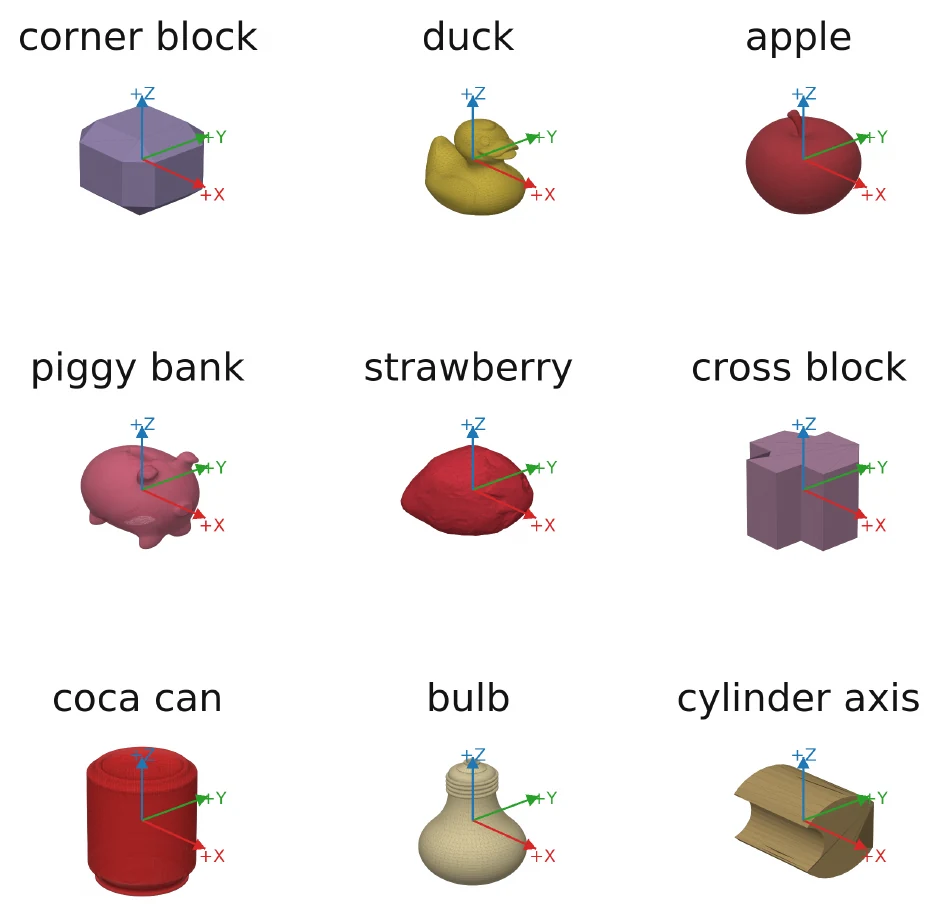
先看一个策略能不能在随机起点下转多种日常物体。9 物体集覆盖不同形状、质心分布、纹理和接触可供性，需要在线推断状态和接触，而不是记物体专用的指法。
| 方法 | Return↑ | EpLen↑ | RotR↑ | OffAxis↓ | AngVar↓ |
|---|---|---|---|---|---|
| 开环回放 | 306.3 ± 48.3 | 320.2 ± 35.0 | 0.332 ± 0.080 | 1.789 ± 0.295 | 2.241 ± 0.679 |
| 盲 RL 策略（无深度无触觉） | 304.1 ± 3.8 | 295.8 ± 2.3 | 0.944 ± 0.004 | 1.539 ± 0.007 | 1.810 ± 0.011 |
| Touch Dexterity（有触觉）[1] | 386.9 ± 3.1 | 362.5 ± 2.3 | 1.018 ± 0.004 | 1.601 ± 0.008 | 1.764 ± 0.053 |
| RL 策略（有深度无触觉） | 362.2 ± 4.7 | 351.0 ± 3.6 | 0.978 ± 0.004 | 1.806 ± 0.009 | 2.222 ± 0.065 |
| In-Hand Rotation（深度 + 触觉）[6] | 236.1 ± 2.7 | 272.5 ± 2.8 | 0.882 ± 0.003 | 1.986 ± 0.009 | 2.487 ± 0.074 |
| WM-Craftnet（从头训练） | 414.3 ± 15.7 | 264.2 ± 8.8 | 0.742 ± 0.012 | 1.285 ± 0.010 | 1.735 ± 0.052 |
| WM-Craftnet（触觉全置零） | 724.9 ± 4.4 | 428.8 ± 2.8 | 1.252 ± 0.004 | 1.224 ± 0.006 | 1.388 ± 0.031 |
| WM-Craftnet（触觉丢失 75%） | 735.2 ± 4.1 | 429.8 ± 2.7 | 1.272 ± 0.004 | 1.224 ± 0.006 | 1.390 ± 0.031 |
| WM-Craftnet（触觉丢失 50%） | 737.8 ± 4.4 | 425.1 ± 3.6 | 1.276 ± 0.004 | 1.279 ± 0.006 | 1.511 ± 0.061 |
| WM-Craftnet（触觉丢失 25%） | 743.4 ± 4.2 | 427.9 ± 3.2 | 1.287 ± 0.004 | 1.243 ± 0.006 | 1.434 ± 0.032 |
| WM-Craftnet（WSM 预训练，只用本体） | 684.5 ± 4.3 | 424.0 ± 2.2 | 1.191 ± 0.003 | 1.310 ± 0.007 | 1.234 ± 0.013 |
| WM-Craftnet（WSM 预训练，本体 + 触觉） | 698.9 ± 4.3 | 435.4 ± 1.9 | 1.192 ± 0.002 | 1.165 ± 0.006 | 1.373 ± 0.024 |
| WM-Craftnet（完整 WSM） | 753.3 ± 3.6 | 435.2 ± 1.9 | 1.293 ± 0.004 | 1.225 ± 0.006 | 1.324 ± 0.027 |
基线回报在 236.1 到 386.9 之间。从头训练的 WM-Craftnet 回报 414.3，OffAxis 和 AngVar 降到 1.285 和 1.735，但 RotR 0.742 低于一些基线。预训练的完整 WSM 回报 753.3、RotR 1.293、OffAxis 1.225、AngVar 1.324。图 2(a) 是 z 轴各方法的训练奖励，顺序和表 1 相同。触觉从完整输入降到丢 25%、全置零，回报从 753.3 降到 743.4 和 724.9。模态对照从只用本体 684.5，到本体 + 触觉 698.9，再到深度 + 触觉的完整输入 753.3；本体 + 触觉的 OffAxis 最低（1.165），但 RotR 低于完整 WSM。图 2(b) 是这些对照。
测试时把触觉全置零，回报 724.9 / 753.3 = 0.962，只降 3.8%；四档（0、25%、50%、75% 丢失、全零）是单调的：753.3 > 743.4 > 737.8 > 735.2 > 724.9。触觉全零的完整 WSM（724.9）仍高于训练时就有触觉、但没有深度的“本体 + 触觉”WSM（698.9），后者又只比“只用本体”（684.5）高 14.4。所以按表 1，三种输入里深度的贡献（698.9 → 753.3，+54.4）远大于触觉（684.5 → 698.9，+14.4）。测试时遮蔽怎么做，论文没写，仓库里也没有对应脚本。代码里现成的两个开关是丢失概率 sensorNoise 和把指定传感器置零的 disableSet（wm_craftnet_rotation.py:517, 1644-1658），两者都改的是同一个 sensed_contacts，它同时进演员的堆叠观测和 WSM 的 prop；所以如果用的是它们，演员和 WSM 是一起被遮的（我的推断）。disableTacObs 会把触觉维数直接删掉（:288-289），和训练好的检查点维数不符，不会是表 1 用的办法。训练时 WSM 还有 17 连杆接触的辅助头，这一部分不受测试遮蔽影响。另外这几行的“完整 WSM”指的是哪个预训练设置，见读者注 14。
§4.2 说“从头训练的 WM-Craftnet 414.3”“预训练的完整 WSM 753.3”。§3.4 说 WSM 在 9 物体 z 轴数据上预训练，再用于 49 物体。那么在同一个 9 物体 z 轴基准上，“预训练”的 WSM 是用什么数据预训练的？论文没写。可能是先跑一轮完整训练得到 WSM，再拿它初始化第二轮（相当于 WSM 多训了一轮）；如果是这样，753.3 和 414.3 的差距里有很大一部分来自“多训一轮”，而不只是方法本身。未核实。
还有两个疑点：从头训练的 RotR 0.742 低于除开环回放以外的所有基线，EpLen 264.2 也是全表最短，但回报 414.3 又高于所有基线；置信区间 ±15.7 是其他 WSM 行的 3 倍以上。图 2(b) 里蓝色“WM-Craftnet”曲线（目测）后半段在 380 到 450 之间大幅抖动。我的推断：从头训练时 WSM 在 PPO 前期还没学好，\(h_t\) 是一个不断漂移的输入，策略学得不稳。
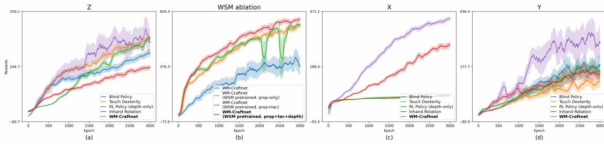
目测图 2(a) 终点（约 3000 epoch）：WM-Craftnet 约 420–470（末段在抖），RL（仅深度）约 440，Touch Dexterity 约 450，盲策略约 330，In-Hand Rotation 约 210。表 1 的评测顺序是 WM（753.3 或 414.3）> TD 386.9 > RL 深度 362.2 > 盲 304.1 > IHR 236.1。曲线里 WM-Craftnet 和 TD、RL 深度挤在一起，看不出表 1 里“完整 WSM 比 TD 高一倍”的差距。我的推断：图 2(a) 的紫线是从头训练的 WM-Craftnet（和表 1 的 414.3 一致），而 753.3 那一行对应的是图 2(b) 的红线。论文没有说明，目测，未核实。
| 方法 | Return↑ | EpLen↑ | RotR↑ | OffAxis↓ | AngVar↓ |
|---|---|---|---|---|---|
| 带噪深度监督 | 708.0 ± 3.5 | 431.1 ± 2.0 | 1.265 ± 0.005 | 1.299 ± 0.006 | 1.456 ± 0.045 |
| 去掉 \(h_{t-1}\) 循环输入 | 705.4 ± 4.3 | 434.3 ± 2.3 | 1.282 ± 0.005 | 1.125 ± 0.006 | 1.185 ± 0.008 |
| 编码器-解码器 \(z_t\) 策略 | 667.6 ± 4.7 | 417.4 ± 2.6 | 1.254 ± 0.003 | 1.323 ± 0.006 | 1.343 ± 0.018 |
| 完整 WSM | 753.3 ± 3.6 | 435.2 ± 1.9 | 1.293 ± 0.004 | 1.225 ± 0.006 | 1.324 ± 0.027 |
受控变体。表 2 分别检验干净深度监督、确定性循环和循环策略特征。重建带噪深度而不是干净深度，回报从 753.3 降到 708.0；把循环策略上下文换成每步的编码器-解码器特征，降到 667.6。去掉 \(h_{t-1}\) 得到 705.4 回报和 1.282 RotR，但 OffAxis 和 AngVar 改善到 1.125 和 1.185，说明稳定性和任务表现之间有取舍。表旁的训练曲线显示完整 WSM 最终奖励最高。
| 方法 | 鸭子 | 十字块 | 角块 | 双缺口块（未见） | ||||
|---|---|---|---|---|---|---|---|---|
| RR | SR | RR | SR | RR | SR | RR | SR | |
| 开环回放 OlR | 2.32 | 6/10 | 3.04 | 6/10 | 5.19 | 7/10 | 0.23 | 0/10 |
| Touch Dexterity TD [1] | 1.54 | 4/10 | 0.34 | 2/10 | 0.22 | 0/10 | 0.27 | 0/10 |
| In-Hand Rotation IHR [6] | 1.83 | 5/10 | 0.45 | 1/10 | 0.36 | 1/10 | 0.39 | 0/10 |
| IHR + WSM 去噪深度 | 2.76 | 8/10 | 1.21 | 8/10 | 2.43 | 10/10 | 0.80 | 0/10 |
| 本文 | 16.179 | 10/10 | 8.01 | 10/10 | 8.48 | 10/10 | 4.32 | 8/10 |
真机实验。在鸭子、十字块、角块和一个未见的双缺口块上做真机 z 轴旋转。表 3 的基线是一个递进：固定的开环回放，到 Touch Dexterity 的触觉反馈，再到 In-Hand Rotation 的深度 + 触觉反馈。IHR 对仿真深度到真实带噪深度的转变很敏感；把 WSM 去噪后的深度喂给它，在三个见过的物体上旋转和成功率都提高，说明几何去噪有用，但在未见的块上转得有限、没有一次成功。WM-Craftnet 用从深度、触觉、本体和动作历史联合学到的循环 WSM 特征做条件，在见过和未见的物体上 RR 和 SR 都高。
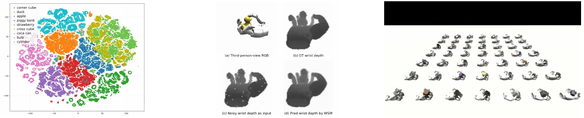
这一节分析 WSM 学到的表征。结果表明它的循环上下文结合了几何、接触演化和物体运动相关的线索。表 10 的辅助头研究里，回报从不加辅助头的 688.1，到只加价值头的 737.0，到全部头的 753.3。表 2 给了干净深度和循环状态的受控变体，LSTM 和 GRU 历史基线放在附录 B.1。
两个诊断：在 9 个 z 轴物体上，把评测时的循环状态 \(h_t\) 投影到 t-SNE，看物体和交互阶段的结构；物体标签只用来上色，不是策略输入。另外从隐状态解码干净深度，和真值、带噪腕部深度对比。
隐状态和重建分析。图 3 显示部分依赖物体的区域，以及跨物体、跨回合阶段的重叠。图 4 显示 WSM 从带噪输入重建出更干净的深度，去掉伪影、保留手-物几何；真机视频里效果相同。两项诊断都和“循环状态同时反映物体相关几何和共享的交互阶段”一致。
可复用的联觉先验。同一个预测模型可以用到 9 物体 z 轴设置之外。图 5 和网站视频展示一个在 49 个新物体上训练的下游策略：3000 个 epoch 后，每个物体平均每回合转 9.37 ± 0.13 rad，没有先验的基线是 3.28 rad；训练中的掉落率从开始的 6% 降到结束的 0.3%。另一个五块体的先验规模诊断（斜块、窄块、双缺口块、阶梯块、V 形切口块）：RotR 从头训练 / 9 物体先验 / 49 物体先验依次是 1.10 / 1.34 / 1.46。这个诊断和下面按轴划分的留出集不同；附录 B.2 给出完整物体集，图 8 可视化循环状态的组织。
9.37 / 3.28 = 2.86 倍。“掉落率 6% → 0.3%”是同一个有先验的训练从开始到结束的变化，不是有无先验的对比；没有先验时最终掉落率是多少，论文没给。3.28 rad 没给置信区间。“49 物体先验”在五块体诊断里出现，说明还有一个在 49 物体上训过的 WSM 被再拿去初始化，这一步的流程论文没写。五块体里的“双缺口块”同时出现在真机的未见物体和 y 轴留出集里，三处是不是同一个模型未核实。49 物体的资源和配置都没有发布（代码只有 set_z、set_x4、set_y 三组，wm_craftnet_rotation.py:343-353）。
接下来评测手掌被动支撑更少的轴。y 轴旋转对细长物体有更大的力臂和不对称接触；x 轴更难：指尖工作空间有限，必须在重力把物体拉离手掌的同时重新分配接触。所有按轴的策略都用同样的 WM-Craftnet 设计、奖励、随机起点和可部署观测，每个轴单独训一个 WSM。
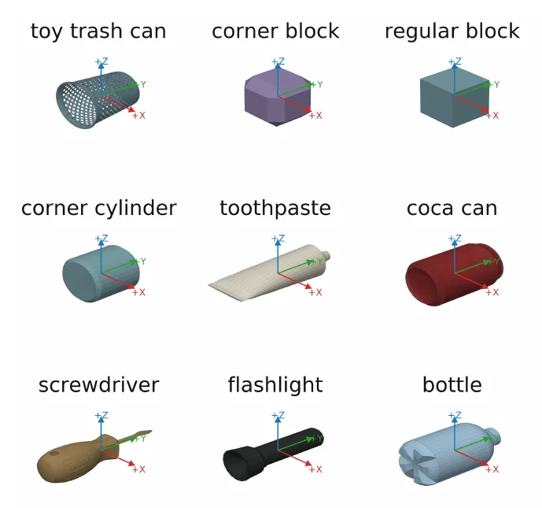
| 方法 | Return↑ | EpLen↑ | RotR↑ | Fall↓ | ObjVel↓ |
|---|---|---|---|---|---|
| 开环回放 | −52.4 ± 5.2 | 85.8 ± 10.0 | 0.031 ± 0.063 | 0.784 ± 0.082 | 0.0366 ± 0.0042 |
| 盲 RL 策略 | 177.8 ± 9.2 | 192.4 ± 7.6 | 0.545 ± 0.016 | 0.164 ± 0.002 | 0.0737 ± 0.0014 |
| Touch Dexterity [1] | 105.3 ± 5.8 | 172.0 ± 6.2 | 0.297 ± 0.030 | 0.208 ± 0.003 | 0.0760 ± 0.0021 |
| RL 策略（有深度无触觉） | 154.8 ± 6.9 | 178.4 ± 5.4 | 0.288 ± 0.033 | 0.103 ± 0.002 | 0.0909 ± 0.0015 |
| In-Hand Rotation [6] | 142.8 ± 5.5 | 162.5 ± 4.8 | 0.377 ± 0.025 | 0.063 ± 0.003 | 0.0787 ± 0.0021 |
| WM-Craftnet | 272.7 ± 13.5 | 215.0 ± 8.7 | 1.025 ± 0.026 | 0.049 ± 0.001 | 0.0682 ± 0.0013 |
y 轴用表 4 旁的工具类物体集，测试会撬着手指转的物体。WM-Craftnet 把回报从最强基线的 177.8 提到 272.7，RotR 从最好基线的 0.545 提到 1.025（接近翻倍），掉落率最低。RotR 提高 88.1%，远大于 EpLen 的 11.7%，说明回报的提升来自更快的目标轴进度，而不只是回合更长。它的 ObjVel 排第二而不是第一，所以优势在于受控旋转和减少掉落，不是物体整体运动更小。图 2(d) 的训练趋势相同。
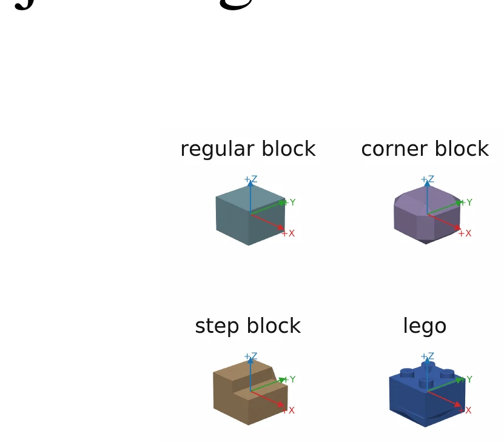
| 方法 | Return↑ | EpLen↑ | RotR↑ | Fall↓ | ObjVel↓ |
|---|---|---|---|---|---|
| 开环回放 | 18.0 ± 6.8 | 129.4 ± 22.3 | 0.411 ± 0.054 | 0.164 ± 0.064 | 0.0448 ± 0.0019 |
| 盲 RL 策略 | 44.0 ± 0.8 | 63.4 ± 1.0 | 0.867 ± 0.002 | 0.033 ± 0.001 | 0.0311 ± 0.0001 |
| Touch Dexterity [1] | 37.8 ± 0.2 | 42.7 ± 0.2 | 1.023 ± 0.002 | 0.039 ± 0.002 | 0.0334 ± 0.0001 |
| RL 策略（有深度无触觉） | 38.2 ± 0.2 | 43.7 ± 0.4 | 1.079 ± 0.003 | 0.033 ± 0.001 | 0.0323 ± 0.0001 |
| In-Hand Rotation [6] | 295.1 ± 3.3 | 365.1 ± 3.1 | 0.839 ± 0.001 | 0.103 ± 0.003 | 0.0433 ± 0.0001 |
| WM-Craftnet | 432.8 ± 2.1 | 435.4 ± 1.8 | 1.114 ± 0.001 | 0.020 ± 0.001 | 0.0460 ± 0.0001 |
x 轴（表 5）更严格地考验接触顺序：策略要在很小的有效手指空间里滚动物体，并在物体离开手掌支撑之前重新分配接触。盲、只触觉、只深度三个策略回报都低于 45、回合长度低于 64；开环回放撑得更久，但回报低、RotR 低、掉落率高。WM-Craftnet 回报 432.8、回合长度 435.4，RotR 最高、掉落率最低，保持抓握的同时找到能推进旋转的接触。
正文说各轴“用同样的奖励”。代码里 x、y 两个任务配置覆盖了一批权重（WMCraftnetRotationX.yaml、WMCraftnetRotationY.yaml）：力矩和功 −0.003 → −0.001，动作 −0.002 → −0.000001，控制误差 −1.0 → −0.001，手部姿态 1.5 → 0.5。初始位置噪声：表 7 写 [0.035, 0.02, 0.0025] m、旋转 10°；z 轴配置是 [0.03, 0.015, 0.001] m、5°（WMCraftnetRotation.yaml:28-29，发布检查点同），x / y 是 [0.01, 0.005, 0.0025] m、5°。三组都不等于表 7。“同样的奖励”可能指同样的奖励形式，但权重并不相同。基线是否也用了各轴的覆盖权重，代码里没有基线实现，无法核对。
另外表 5 里 WM-Craftnet 的 ObjVel 0.0460 是全表最高（最差），正文没提；表 4 里它排第二（正文提了）。
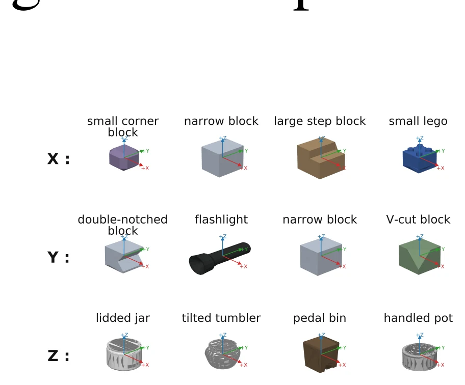
| 方法 | RotR, Ret.（x）↑ | RotR, Ret.（y）↑ | RotR, Ret.（z）↑ | 仿真恢复率↑ | 仿真恢复时间↓（s） | 真机成功↑ |
|---|---|---|---|---|---|---|
| 盲 RL 策略 | 0.852, 134.7 | 0.300, 135.7 | 0.665, 277.1 | 4.7% ± 3.7% | 3.62 ± 2.25 | 41/200 |
| Touch Dexterity [1] | 0.923, 35.8 | 0.174, 78.7 | 0.605, 242.2 | 6.2% ± 4.2% | 3.33 ± 1.41 | 33/200 |
| RL 策略（无触觉） | 0.853, 33.8 | 0.378, 168.9 | 0.696, 301.7 | 5.5% ± 4.0% | 3.14 ± 0.79 | 45/200 |
| In-Hand Rotation [6] | 0.732, 246.0 | 0.309, 193.0 | 0.468, 156.1 | 0.0% ± 0.0% | N/A | 53/200 |
| WM-Craftnet | 1.002, 333.6 | 0.715, 203.5 | 0.842, 533.1 | 14.1% ± 6.0% | 2.56 ± 0.77 | 175/200 |
未见物体测试。先在仿真里做按轴的零样本迁移：直接评测在各自 4、9、9 个物体上训的 x、y、z 轴策略，不做物体专门的微调。每个轴的留出集有 4 个未见物体（见上图）。WM-Craftnet 在三个轴上都是 RotR 和回报最高。相对每个指标上最强的非 WSM 方法，RotR 提高 8.6%、89.2%、20.9%（x、y、z），回报提高 35.6%、5.4%、76.7%。
扰动恢复测试。在严重的仿真扰动下，测策略能否回到可控构型，以及成功恢复的试验用了多长时间。WM-Craftnet 恢复成功率 14.1%，最强基线 6.2%；平均恢复时间最短，2.56 s。相对各指标上的最强基线，绝对提升 7.9 个百分点、恢复时间少 0.58 s。在困难起点和过程中的外力扰动下，图 6 里的代表性成功回合显示策略把物体重新居中、扶正，或从手掌转回可控的手指空间，再继续绕目标轴旋转。绝对恢复率在这么大的扰动下仍然有限。
RotR 提升（对每列最强的非 WSM）：x 1.002 / 0.923（TD）= 1.0856 → 8.6% ✓；y 0.715 / 0.378（RL 无触觉）= 1.8915 → 89.2% ✓；z 0.842 / 0.696（RL 无触觉）= 1.2098 → 21.0%，正文写 20.9%（截断而不是四舍五入，差 0.1 个点）。回报提升：x 333.6 / 246.0（IHR）= 1.3561 → 35.6% ✓；y 203.5 / 193.0（IHR）= 1.0544 → 5.4% ✓；z 533.1 / 301.7 = 1.7670 → 76.7% ✓。恢复：14.1 − 6.2 = 7.9 个百分点 ✓（6.2% 是 TD）；时间 3.14 − 2.56 = 0.58 s ✓（3.14 是 RL 无触觉，两个“最强基线”不是同一个方法，正文用“on the respective metric”交代了）。真机 175/200 = 87.5%，基线 16.5%–26.5%。
y 轴 RotR 的 88.1%：1.025 / 0.545 = 1.8807 ✓；EpLen 的 11.7%：215.0 / 192.4 = 1.1175 ✓（两者都对盲策略比）。另外恢复率的 95% 置信区间很宽：14.1% ± 6.0% 和 TD 的 6.2% ± 4.2% 区间有重叠（8.1% 到 10.4%）。论文没写扰动恢复测了多少回合；若按二项分布 \(1.96\sqrt{p(1-p)/n}=0.060\)、\(p=0.141\) 反推，\(n\approx 129\)，接近 128（我的推算）。
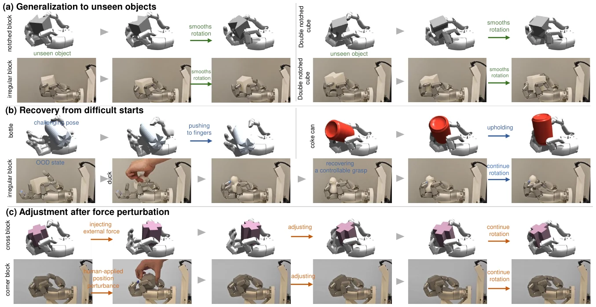
大规模真机评测。另一套硬件协议：20 个真实物体上做标准 z 轴旋转，每个 10 次。物体包括 9 个训练物体和 11 个未见物体（带盖罐、倾斜杯、脚踏垃圾桶、带柄锅、斜块、窄块、双缺口块、阶梯块、V 形切口块、垃圾桶、水桶）。WM-Craftnet 成功 175/200 次，基线 33/200 到 53/200。这个结果衡量的是广泛物体集上的旋转成功率。
工具使用行为。附录 B.3 报告用同一策略形式做螺丝刀平移和旋转。
WM-Craftnet 是一个基于世界模型的视触觉框架：WSM 从带噪深度、本体、触觉和动作学 Dreamer 式隐动力学，重建干净深度目标，并用确定性循环特征给策略当条件。深度重建去掉传感器伪影、保留手-物几何；预测表征还能当 49 物体下游策略的可复用先验。实验显示它在多物体旋转、未见物体迁移、扰动恢复和 sim-to-real 上都好于视触觉基线。
局限：当前任务都是短视野的，严重扰动下的恢复仍然有限。失败发生在物体超出手的工作空间、大偏移离开恢复的吸引域、漂移和卡住破坏稳定接触时。以后会探索更广的分布和更复杂的工具使用。
表 7 汇总世界模型和深度预处理设置。世界模型每步接收单步本体、触觉 / 接触向量、加噪的预处理深度、上一步动作、回合开始标志；奖励只作为预测目标存着。RSSM 每个控制步做一次观测更新，只把停梯度的确定性特征 \(h_t\) 经小 MLP 投影后给演员。
世界模型的数据在 PPO 采样时在线收集，存进环形回放缓存：本体、触觉 / 接触、加噪深度输入、只裁剪的干净目标深度、上一步动作、奖励和回合开始标志。预热之后，采连续片段训练干净深度重建、本体重建、触觉接触预测、奖励预测，以及 Dreamer 式的动力学 / 表征 KL。完整 WSM 另外预测物体位姿、价值和物体形状；形状目标是 BPS 到网格的位移向量。这些头在预训练和下游适应时都用。
评测预训练先验时，迁移编码器、多模态 RSSM、深度 / 本体解码器和奖励预测器。下游 49 物体 PPO 训练时，这些部件继续用新数据适应，演员-评论家和任务专用头为目标分布重新学。
replay_capacity: 256 指 256 行，每行存所有环境的一步（world_model.py:163-181）。论文设置 1024 个环境时是 256 × 1024 = 262,144 条转移；PPO 每个 epoch 采 horizon_length: 16 步，所以缓存只保留最近 16 个 PPO epoch 的数据。预热 10,000 条转移 ≈ 10 行，不到一个 epoch 就开始训。每个 PPO epoch 训 WSM 10 次，每次 16 条 × 32 步 = 512 条，共 5,120 条；同期新采 16 × 1024 = 16,384 条，所以平均每条转移只被 WSM 看 0.31 次。采样时从“已填满的前缀”里随机选环境和起点，第一步强制 is_first=1（:313-377），即每个片段都从零状态开始展开 32 步，不接着缓存里的真实历史。注意 \(t\) 时刻 RSSM 在环境里实际运行时是从回合开头一直滚到当前，片段训练只看 32 步，两者的“记忆长度”不同（我的观察，论文没讨论）。脚本默认 256 个环境（README 说为了在 32 GiB 内存的机器上放下缓存），此时缓存只有 65,536 条。
表 7 列出 PPO、控制和奖励设置，表 8 汇总可部署信号和仿真侧信号。演员为全部 22 个手关节输出相对目标更新，信号级滤波器平滑后交给 10 Hz 的硬件控制器。奖励偏好稳定、有目标、像人的旋转，而不只是速度：
\[\begin{aligned}r_t:=\ &\lambda_{\rm spin}r^{\rm spin}_t+\lambda_{\rm vel}r^{\rm vel}_t+\lambda_{\rm contact}r^{\rm contact}_t+\lambda_{\rm dist}r^{\rm dist}_t+\lambda_\tau r^\tau_t+\lambda_{\rm work}r^{\rm work}_t\\&+\lambda_a r^a_t+\lambda_{\rm ctrl}r^{\rm ctrl}_t+\lambda_{\rm pose}r^{\rm pose}_t+r^{\rm drift}_t+r^{\rm axis}_t+r^{\rm nospin}_t\end{aligned}\tag{10}\]目标轴旋转项用投到 \(\mathbf a\) 上的有符号增量旋转，按最大转速截断。稳定项惩罚物体速度、漂移、偏轴旋转、大力矩、机械功、大动作和跟踪误差；接触和姿态项鼓励有用的指尖接近，避免过大的力或非指尖接触，并温和地偏向自然手形。
回合在以下情况重置：物体掉落超过距离阈值、偏离期望旋转轴太远、连续太多步目标轴转速低于阈值、到达时间上限。这些重置减少不可恢复失败后的无效探索，也让所有基线满足同样的稳定性要求。
wm_craftnet_rotation.py:2279-2364（compute_hand_reward_finger），z 轴配置 WMCraftnetRotation.yaml:50-101：
表 7 的“Object drift 100.0”写成正数，代码里是 −100·距离²，表中的值是系数的绝对值。
真机用带触觉的 Sharpa Wave 手和腕部深度相机（RealSense L515）。手控制器、腕部相机和触觉流都是 10 Hz；仿真用同样的策略 / 控制频率，物理步 60 Hz。两个域里策略的观测 / 动作接口相同。
上真机之前先辨识关节级动力学：用 1 Hz 正弦动作激励真手，比较测得的关节响应和仿真。调仿真的 Kp、Kd，让仿真轨迹的幅值和相位对齐硬件响应。这个标定给出名义动力学模型，域随机化覆盖剩下的不匹配。图 7 是标定后全手的关节跟踪拟合：同样的正弦指令下仿真和真实关节响应很接近，仿真-真实平均跟踪误差低于 0.2°。
训练随机化物体质量、摩擦、PD 增益、观测 / 动作噪声、重置位姿、外力和重力方向（表 7）。训练时质量在 [0.2, 0.4] kg 里采样，测试用更宽的范围。摩擦和关节增益随机化覆盖接触和执行器的不确定性；深度和触觉观测有丢失、噪声、小角度图像旋转、阈值变化和延迟。外力和重力方向课程进一步鼓励扰动恢复，而不是记住单一的掌心朝上旋转指法。
| 参数 | 论文 | 代码 |
|---|---|---|
| 系统 | ||
| 手 | Sharpa Wave，22 自由度五指 | right_sharpa_wave.urdf，numActions: 22 ✓ |
| 硬件频率 | 手控制 / 腕部相机 / 触觉：10 Hz | 部署 control_hz = 10；相机流 30 fps（cam_fps: 30），SDK 触觉 30 Hz |
| 相机流 | 腕部，640 × 480，3D 打印支架固定 | 640 × 480 ✓；型号代码写 D405 ≠ L515（读者注 16） |
| 仿真频率 | 物理 60 Hz；观测 / 控制 10 Hz | dt 0.01667、decimation 6 ✓ |
| 世界模型 | ||
| 类型 | 多模态输入的 Dreamer 式 RSSM | wsm/（dreamerv3-torch 移植）✓ |
| 确定 / 随机 / 离散维数 | 512 / 32 / 32 | 512 / 32 / 32 ✓ |
| 隐层 / 循环深度 | 512 / 1 | 512 / 1 ✓ |
| 演员投影 | 512 → 64 → 32 → 16 | 512 → 256 → 128 → 32（读者注 10） |
| 回放容量 / 预热 | 256 行 / 10,000 条转移 | 256 / 10000 ✓ |
| 批大小 / 片段长度 / 更新次数 | 16 / 32 / 每个 PPO epoch 10 次 | 16 / 32 / 10 ✓（WSM 默认 64 被任务配置覆盖成 32） |
| 优化器 / 学习率 / 梯度裁剪 | Adam / 10⁻⁴ / 1000 | adam / 1e-4 / 1000 ✓ |
| KL 自由比特 / dyn / rep | 1.0 / 0.5 / 0.1 | 1.0 / 0.5 / 0.1 ✓ |
| 深度输入 | ||
| 策略深度张量 / 最大深度 | 96 × 72 / 0.4 m | 96 × 72 / 0.4 ✓ |
| 时间丢点 / 相关 | 0.02 / 0.95 | 0.01 / 0.95（读者注 6） |
| 随机图像旋转 | ±0.3° | 0.3 ✓ |
| 策略和控制 | ||
| 环境数 / 视野 / 小批 / 小轮数 | 1024 / 16 / 4096 / 4 | 1024 / 16 / 4096 / 4 ✓（脚本默认 256 / 1024） |
| γ / GAE τ / 学习率 / 裁剪 | 0.99 / 0.95 / 10⁻⁴ / 0.2 | 0.99 / 0.95 / 1e-4（自适应 KL 0.02）/ 0.2 ✓ |
| 策略 MLP / 激活 | [512, 256, 256] / ELU | [512, 256, 256] / elu ✓ |
| 自由度 / 回合 / 仿真 dt / 控制抽取 | 22 / 500 / 0.01667 / 6 | 22 / 500 / 0.01667 / 6 ✓ |
| 奖励 | ||
| 旋转 / 最大转速 / 速度 | 1.0 / 2.0 / −0.1 | 1.0 / 2.0 / −0.1 ✓ |
| 力矩 / 功 / 动作 / 控制 | −0.003 / −0.003 / −0.002 / −1.0 | z 轴 ✓；x、y 轴不同（读者注 18） |
| 指尖距离 / 手部姿态 / 偏轴 | 0.1 / 1.5 / 0.001 | 0.1 / 1.5 / 0.001 ✓（x、y 轴姿态 0.5） |
| 物体漂移 / 无旋转 / 掉落惩罚 | 100.0 / −50.0 / −50.0 | 100（代码里取负）/ −50 / −50 ✓ |
| 指尖力系数 / 阈值 / 指数 | 0.9 / 2.0 / 0.01 | 0.9 / 2.0 / 0.01 ✓ |
| 随机化 | ||
| 物体质量 训练 / 测试 | [0.2, 0.4] kg / [0.1, 1.4] kg | [0.2, 0.4] / [0.1, 1.4]（配置注释写测试范围“目前未单独使用”） |
| 摩擦缩放 / PD 缩放 | [0.5, 2.0] / [0.8, 1.2] | [0.5, 2.0] / [0.8, 1.2] ✓；另有刚度 [0.75, 1.5] 对数均匀（yaml:403-407） |
| 观测噪声 / 动作噪声 | [0, 0.05] / [0, 0.04] | [0, 0.05] / [0, 0.04] ✓ |
| 重置位置 / 重置旋转 | [0.035, 0.02, 0.0025] m / 10° | [0.03, 0.015, 0.001] / 5°（读者注 18） |
| 外力缩放 / 概率 / 衰减 | 0.5 / 0.25 / 0.99 | 0.5 / 0.25 / 0.99 ✓ |
| 重力课程 | 1° → 4°，步长 0.05° | 1 → 4，0.05 ✓（完整回合比例 ≥ 0.85 才升级，窗口 2048 回合） |
| 信号 | 使用方 | 说明 | 代码 |
|---|---|---|---|
| 手部本体 | 演员、WM | 归一化的 22 自由度关节状态和之前的目标历史 | 22 + 22 维，✓ |
| 触觉 / 接触 | 演员、WM | 二值接触流，带阈值、丢失和延迟噪声 | 5 个指尖，阈值 0.3 ± 0.05，丢失 0.02，延迟 0.02 ✓；WM 里和本体同一向量 |
| 深度图 | 演员、WM | 带噪腕部深度输入；干净深度只当 WM 重建目标 | 深度只进 WM，不直接进演员（读者注 4） |
| 指令轴 | 演员 | 目标方向 \(\mathbf a\in\{\pm x,\pm y,\pm z\}\) | 24 维；WM 也看得到（读者注 5） |
| 世界模型特征 | 演员 | 投影后的确定性 RSSM 特征 \(\psi(h_t)\) | ✓，投影宽度见读者注 10 |
| 相对动作 | 控制器、WM | 22 自由度关节目标增量，执行前平滑 | ✓ |
| 物体状态 | 只给奖励 / 评论家 | 仿真里的位姿、速度、接触力、掉落 / 重置诊断 | 还进了 WSM 的位姿、形状、价值、17 连杆接触辅助头（读者注 9） |
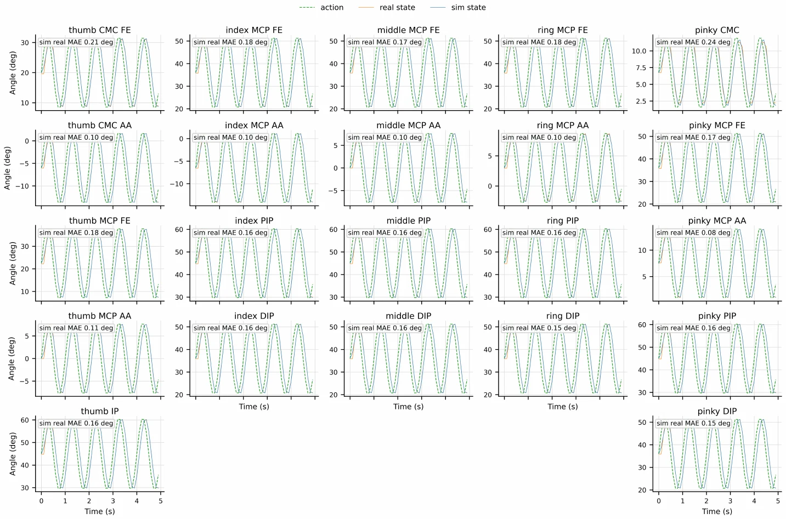
从图上逐格读左上角的标注（标注是文字，读数没有误差）：拇指 CMC FE 0.21、CMC AA 0.10、MCP FE 0.18、MCP AA 0.11、IP 0.16；食指 MCP FE 0.18、MCP AA 0.10、PIP 0.16、DIP 0.16；中指 0.17、0.10、0.16、0.16；无名指 0.18、0.10、0.16、0.15；小指 CMC 0.24、MCP FE 0.17、MCP AA 0.08、PIP 0.16、DIP 0.15。合计 3.34°，22 个平均 0.152°，“平均低于 0.2°”成立。单个关节最大是小指 CMC 0.24°，拇指 CMC FE 0.21° 也超过 0.2°。注意这是仿真和真机关节状态之间的误差，二者都跟着同一个指令走、都有同样的滞后，所以这个数说明的是“PD 跟踪动力学对上了”，不说明接触、摩擦等和物体有关的动力学对上了。小指 CMC 的摆幅只有约 2–11°，误差相对摆幅最大。部署侧的标定配置在 deploy/cfg/pd_sine_shared.yaml，我没有逐项核对。
表 9 比较循环历史和预测式 WSM 目标。LSTM 和 GRU 看同样的观测历史，但不用多模态预测损失训练。
| 方法 | Return↑ | EpLen↑ | RotR↑ | OffAxis↓ | AngVar↓ |
|---|---|---|---|---|---|
| LSTM（无预测目标） | 621.0 ± 4.3 | 424.3 ± 2.7 | 1.186 ± 0.004 | 1.297 ± 0.006 | 1.392 ± 0.028 |
| GRU（无预测目标） | 497.8 ± 4.5 | 377.1 ± 2.5 | 1.095 ± 0.003 | 1.226 ± 0.007 | 1.357 ± 0.013 |
| 完整 WSM | 753.3 ± 3.6 | 435.2 ± 1.9 | 1.293 ± 0.004 | 1.225 ± 0.006 | 1.324 ± 0.027 |
完整 WSM 回报 753.3、RotR 1.293，LSTM 621.0 / 1.186，GRU 497.8 / 1.095。WSM 的 AngVar 也最低（1.324），OffAxis 1.225 和 GRU 的 1.226 相当。这些结果把预测式多模态训练的好处和单纯的循环记忆分开。
LSTM 和 GRU 基线在代码里没有发布（WMCraftnetPPO.yaml 里没有 rnn 段；rl_games 支持 RNN，但没有对应配置）。从正文看，它们“看同样的观测历史”，而 WSM 有三个额外因素：（1）深度通过 CNN 编码器进来，LSTM / GRU 是否也有同样的 CNN 没写；（2）WSM 用单独的优化器、和 PPO 断开梯度，LSTM / GRU 大概率是和 PPO 端到端训练；（3）WSM 的“完整”版本还从预训练初始化（读者注 14）。所以 753.3 对 621.0 的差距，未必全部来自“有没有预测损失”。另外 GRU 比 LSTM 差 123 回报，论文没讨论；RSSM 内部本身就是 GRU 单元（wsm/networks.py 的 GRUCell）。
表 10 看仿真侧辅助目标怎样塑造 WSM。去掉所有辅助头回报 688.1；价值、位姿、物体形状各自改进学到的状态的不同方面。单头变体里价值头的回报提升最大，位姿头的角速度波动最低。全部头一起时总回报和旋转速率最高。
| 方法 | Return↑ | EpLen↑ | RotR↑ | OffAxis↓ | AngVar↓ |
|---|---|---|---|---|---|
| 不加辅助头 | 688.1 ± 3.7 | 433.7 ± 2.0 | 1.239 ± 0.006 | 1.229 ± 0.005 | 1.778 ± 0.138 |
| 只加价值头 | 737.0 ± 4.9 | 435.7 ± 2.2 | 1.291 ± 0.003 | 1.258 ± 0.007 | 1.346 ± 0.045 |
| 只加位姿头 | 690.0 ± 5.8 | 432.3 ± 2.5 | 1.221 ± 0.007 | 1.228 ± 0.008 | 1.231 ± 0.011 |
| 只加物体形状头 | 689.2 ± 4.2 | 428.1 ± 2.2 | 1.261 ± 0.002 | 1.255 ± 0.006 | 1.535 ± 0.032 |
| 完整 WSM | 753.3 ± 3.6 | 435.2 ± 1.9 | 1.293 ± 0.004 | 1.225 ± 0.006 | 1.324 ± 0.027 |
README 说“六个可选头默认全开”，但发布的 wm_craftnet_set_z.pth 是“legacy setup：proprioception + depth only”，测试脚本 scripts/test_wm_craftnet.sh 的 set_z 分支把位姿、触觉、价值、形状四个头全部关掉；检查点配置 example_ckpt/wm_craftnet_set_z.yaml:295-335 也是四个 false。按表 10 的定义，它最接近“不加辅助头”（688.1），而不是“完整 WSM”（753.3）。注意表 10 的“不加辅助头”是否也去掉了触觉接触头，论文没细分（触觉头在正文被列为主损失 \(\lambda_c\mathcal L_{\rm tac}\)，在表 10 又不在单头列表里）。这是我的推断，没有跑检查点，未核实。y 轴测试分支要求六个头全开（test_wm_craftnet_y.sh → WM_HEAD_ARGS），但 y 轴检查点 wm_craftnet_set_y.pth 没有发布（2026-11-23 查 Hugging Face API，仓库里只有 wm_craftnet_set_z.pth 一个权重文件）。
另外 wm_tac_pred（17 连杆接触）和“表 10 里没出现的触觉头”是同一个东西；它在表 1 的“完整 WSM”里是开着的。
图 8(a) 是 9 个 z 轴物体预训练 WSM 之后，下游大规模多物体策略训练用的 49 个新物体。它们在大小、长宽比、曲率和接触几何上差别很大。为了看迁移后的 WSM 在这个规模上是否还保留结构化的交互状态，把下游策略评测时的循环状态做 t-SNE。图 8(b) 显示局部连贯的轨迹、部分依赖物体的区域，以及大量重叠。这和“表征同时刻画依赖物体的几何和跨物体共享的交互阶段，而不是一个严格的物体身份分类器”一致。
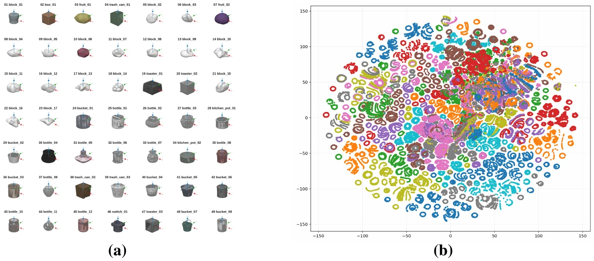
螺丝刀考验工具使用式的行为：细长几何、手柄局部接触、打滑风险、依任务调整。图 9 显示同样的 WM-Craftnet 接口能做目标条件的螺丝刀平移（把螺丝刀调到目标位置），以及保持接触的旋转。
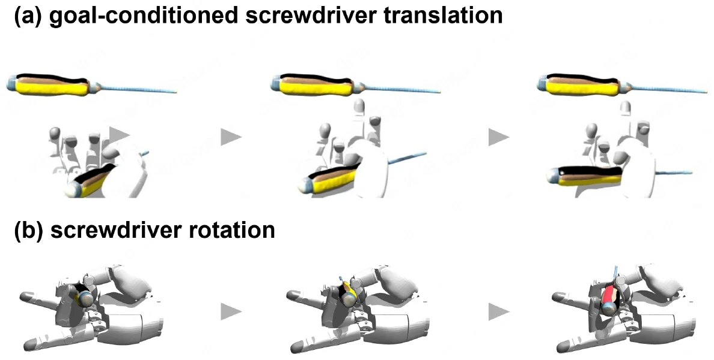
项目网站有更多真机回合、定性比较和失败案例，涉及深度噪声、打滑和困难的接触切换。（项目页只链接，没有抓取。）
论文和官方代码 a1e825a 的逐项对照。✓ 表示一致。只列有意义的条目，表 7 的完整对照在上面。
| 项目 | 论文 | 代码 | 读者注 |
|---|---|---|---|
| 不做想象 / 不用模型优化策略 | 是 | 是；imagine_with_action 只在未调用的 video_pred 里 | 8 |
| 演员接口停梯度 | 是 | WSM 在环境的 torch.no_grad 里前向（world_model.py:192），特征作为观测进 PPO；WSM 有自己的优化器 _model_opt ✓ | – |
| 奖励预测监督 | 有，\(\lambda_r\) 未给 | loss_scale 0.0，且不可覆盖 | 7 |
| 投影层 | 512→64→32→16 | 512→256→128→32 | 10 |
| 本体 / 触觉编码 | 各自 MLP 分支 | 同一个向量、同一个 MLP，含指令轴 | 5 |
| 深度裁剪、高斯噪声 | 有 | 都关着；丢点 0.01 对 0.02 | 6 |
| 深度进演员 | 式 1 写在 \(\mathbf o_t\) 里 | 不直接进，只经 WSM | 4 |
| 各轴同一奖励 | 是 | x、y 轴覆盖了 5 个权重 | 18 |
| 重置噪声 | [0.035, 0.02, 0.0025] m / 10° | z [0.03, 0.015, 0.001] / 5°；x、y 另一组 | 18 |
| 预训练迁移哪些部件 | 编码器、RSSM、深度 / 本体解码器、奖励头 | 同（_WM_BODY_RESUME_PREFIXES）✓ | – |
| 发布检查点 | – | 只有 z 轴，本体 + 深度两个头 | 24 |
| 腕部相机 | RealSense L515 | D405，且加了 SDK 空间 / 时间滤波 | 16 |
| 教师-学生蒸馏 | 没有（只有非对称评论家） | 代码里有蒸馏分支，但 self.distill = False 写死（rl_games/algos_torch/a2c_continuous.py:19）✓ | – |
| 49 物体、留出集、基线、LSTM/GRU、螺丝刀平移 | 有实验 | 都没有发布 | 17、23 |
以下按 README、install.md、deploy/README.md 和源码整理，提交 a1e825a。我没有运行任何命令。
# 环境：Python 3.8，PyTorch 2.1.0 + CUDA 11.8，Isaac Gym Preview 4（需自行下载并同意 NVIDIA 许可） conda create -n wm-craftnet python=3.8 && conda activate wm-craftnet conda install pytorch=2.1.0 torchvision torchaudio pytorch-cuda=11.8 -c pytorch -c nvidia conda install -c fvcore -c iopath -c conda-forge fvcore iopath conda install pytorch3d -c pytorch3d pip install hydra-core gym numpy==1.22.2 tensorboardX tensorboard wandb scipy imageio imageio-ffmpeg h5py trimesh rtree pillow ninja tar -xzvf IsaacGym_Preview_4_Package.tar.gz && cd isaacgym/python && pip install -e . --no-deps # 仿真里看发布的 z 轴检查点（默认开 viewer，无显示器加 HEADLESS=true） hf download SharpaIT/WM-Craftnet wm_craftnet_set_z.pth --local-dir example_ckpt CHECKPOINT=example_ckpt/wm_craftnet_set_z.pth bash scripts/test_wm_craftnet.sh # 训练（脚本默认 256 环境 / 小批 1024；论文是 1024 / 4096） NUM_ENVS=1024 MINIBATCH_SIZE=4096 bash scripts/train_wm_craftnet_z.sh task.env.objSet=set_z bash scripts/train_wm_craftnet_x.sh task.env.objSet=set_x4 bash scripts/train_wm_craftnet_y.sh task.env.objSet=set_y # 用 z 轴 WSM 初始化另一个任务（只加载编码器 / RSSM / 解码器 / 奖励头） bash scripts/train_wm_craftnet_y.sh task.env.cameraPolicy.worldModel.resume_body_from=<agent.pth> # 真机（Python 3.10，另一个环境）：先装 Sharpa Wave SDK 5.0.9 到 deploy/sharpa_sdk/， # 在 build_hardcoded_config() 里设 checkpoint、相机、no_actuation=True 先空跑 python deploy/examples/wm_craftnet_infer.py
以下各条都是本页加的核算或对照，不属于论文内容。点编号跳到对应位置。
论文没写、我也没找到的：RotR / OffAxis / AngVar 的定义；训练种子数；49 物体实验和五块体诊断的完整流程；扰动恢复测试的回合数和扰动大小；螺丝刀平移任务的目标表示；\(\lambda_c\)、\(\lambda_r\)、\(\alpha\) 的值。
文中提到的论文、代码、硬件和数据。2026 年 11 月 23 日用脚本核对，全部返回 200（YCB 官网 ycbbenchmarks.com 当天返回 406 / 500，改用它的 S3 镜像页）。
| 名称 | 是什么 | 主页 / 代码 | 论文 |
|---|---|---|---|
| WM-Craftnet | 本文项目页（只链接，没有抓取） | 代码 · 检查点 · Sharpa 研究文章 | 2609.07002 |
| Sharpa Wave | 22 自由度五指灵巧手 | SDK | – |
| RealSense L515 | 论文写的腕部深度相机 | realsenseai.com | – |
| Isaac Gym | GPU 仿真器（Preview 4） | IsaacGymEnvs | 2108.10470 |
| ContactDB | 部分物体网格的来源（苹果、存钱罐、手电筒、牙膏等） | contactdb.cc.gatech.edu | 1904.06830 |
| YCB | 资源目录名为 ycb 的物体（鸭子、草莓、灯泡、乐高） | S3 镜像 | 1502.03143 |
| WMP | 世界模型当条件的腿足感知，本文的直接上游 | bytedance/WMP | 2409.16784 |
| Robot Synesthesia（In-Hand Rotation 基线） | 视触觉点云手内旋转 | in-hand-rotation | 2312.01853 |
| Touch Dexterity | 二值触觉手内旋转基线 | – | 2303.10880 |
| HORA | RMA 手内旋转（[4]）；本仓库声明里没提 | haozhiqi/hora | 2210.04887 |
| DreamerV3 | RSSM 的来源；本站精读 | dreamerv3-torch | 2301.04104 |
| DreamMimic | 同一作的世界模型特征蒸馏 | – | 2608.22278 |
| rl_games | PPO 后端 | Denys88/rl_games | – |